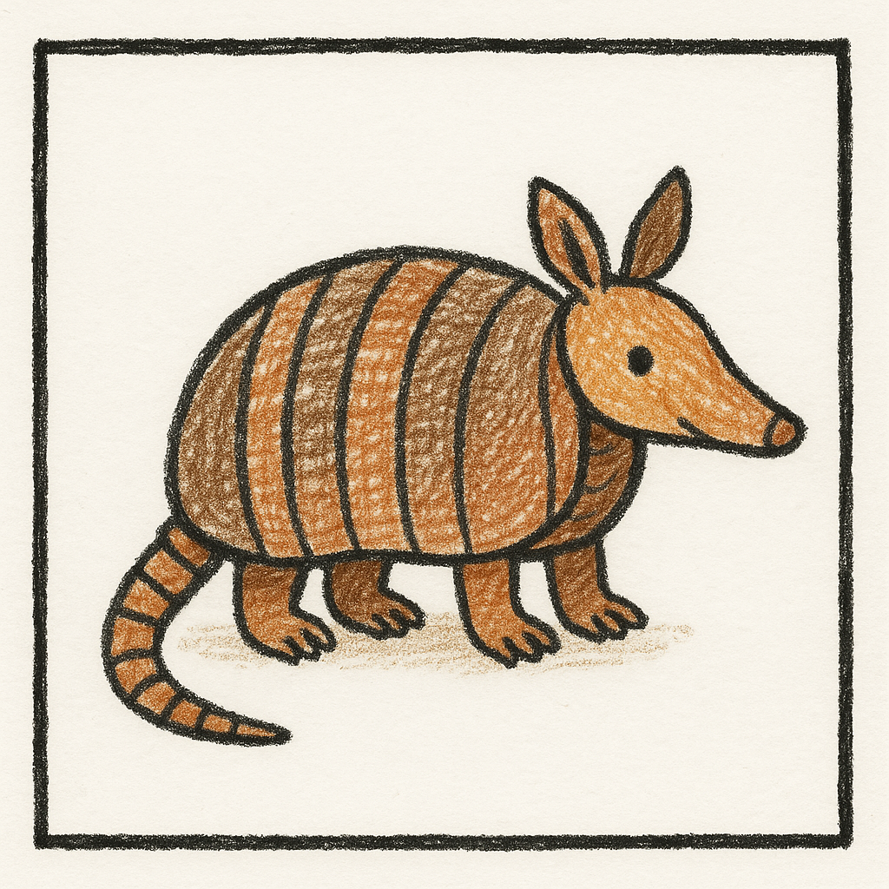
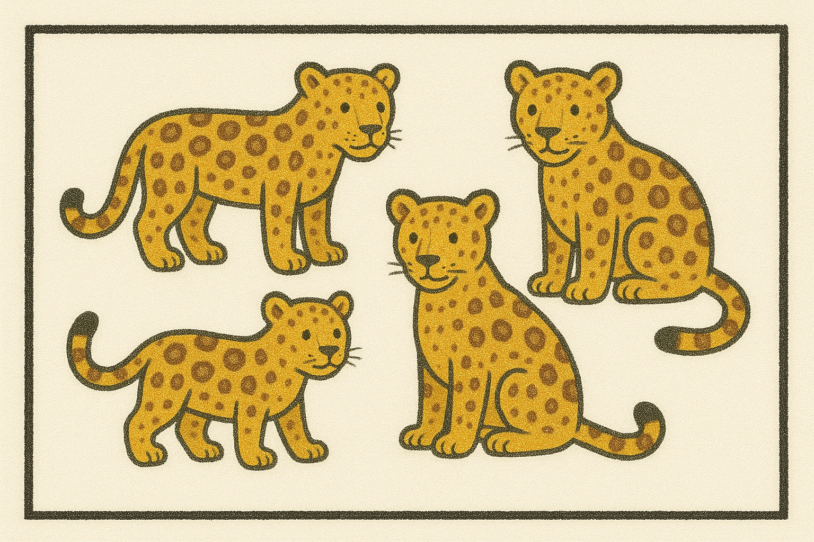
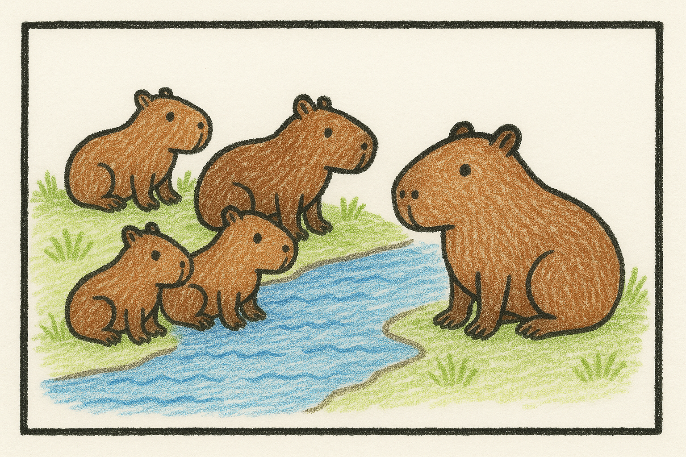
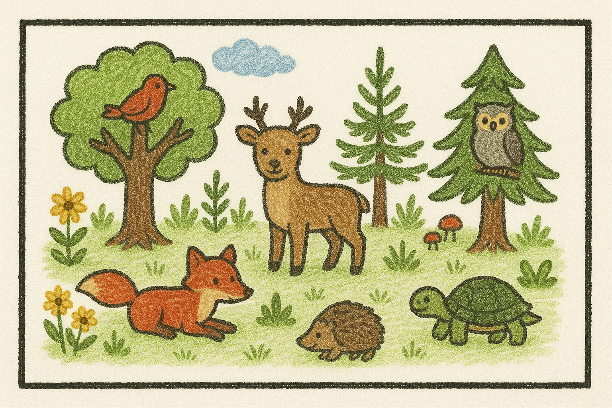
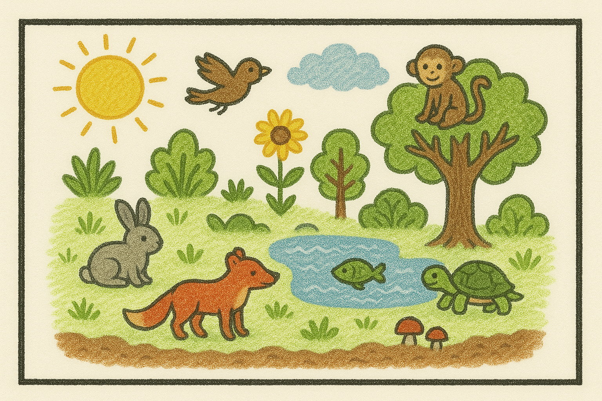
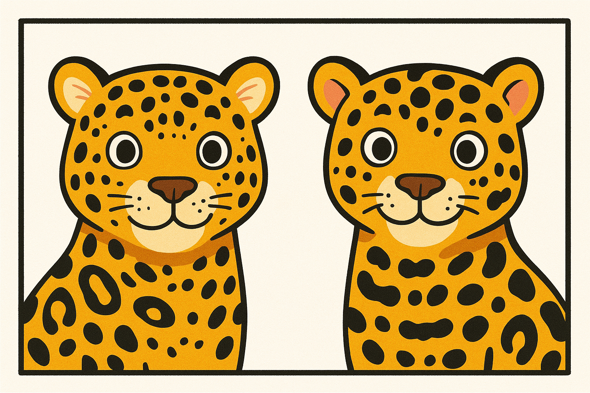

¿Qué es un ecosistema?
Un ecosistema es el lugar donde viven muchos seres vivos (animales, plantas, bacterias, etc.) y se relacionan entre sí y con el ambiente (luz, agua, suelo).
Niveles de organización
Individuo

Un solo ser vivo. (Ejemplo: un armadillo o un árbol)
Especie

Grupo de seres vivos que pueden tener crías entre sí y dejar descendencia fértil. Los miembros de una especie no pueden tener crías fértiles con miembros de otras especies (aislamiento reproductivo). (Ejemplo: todos los yaguaretés, todos los árboles de tala)
Población

Varios individuos de la misma especie juntos en un lugar y tiempo. (Ejemplo: varios carpinchos en un río, o muchos árboles de tala en un bosque)
Comunidad

Diferentes especies (animales y plantas) viviendo juntas e interactuando. (Ejemplo: bosque con árboles, pájaros, insectos, hongos, etc.)
Ecosistema

Animales, plantas, agua, suelo y sol. (Ejemplo: paisaje completo)

Dato curioso 🐾
Cada yaguareté es un individuo único, con su propio patrón de manchas en el pelaje, que lo distingue de los demás. Su comportamiento, como la caza y el cuidado de sus crías, varía de un individuo a otro.
Cuadro sinóptico visual
graph TD
A["Ecosistema"]
A --> B["Comunidad"]
B --> C["Población"]
C --> D["Especie"]
D --> E["Individuo"]
B --> F["Otra población"]
B --> G["Otra población"]
A --> H["Ambiente (luz, agua, suelo)"]